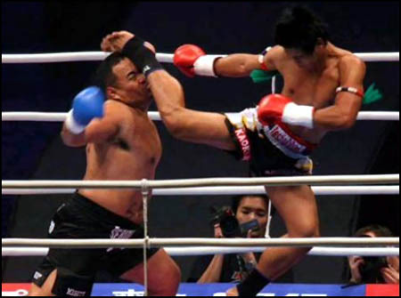

Thai Kick Boxing
Muay Thai (Thai: มวยไทย, RTGS: Muai Thai, IPA: [mūɛj tʰāj]) is a combat sport from Thailand that uses stand-up striking along with various clinching techniques. It is similar to other Indochinese kickboxing systems, namely pradal serey from Cambodia, tomoi from Malaysia, lethwei from Burma and muay Lao from Laos. Descended from muay boran, muay thai is Thailand's national sport.

Early History of Thai Kick Boxing
Various forms of kickboxing have long been practiced throughout Southeast Asia. Based on Chinese and Indian martial arts,[7] practitioners claim that these systems can be traced back to a thousand years. Muay thai evolved from the older muay boran (ancient boxing), an unarmed combat method which would have been used by Siamese soldiers after losing their weapons in battle. Some believe that the ancient Siamese military created muay boran from the weapon-based art, krabi krabong but others contend that both systems were developed at the same time.[8] Krabi krabong nevertheless was an important influence on muay thai as seen in the movements in the wai khru. Muay boran, and therefore muay Thai, was originally called dhoi muay or simply muay. As well as being a practical fighting technique for use in actual warfare, muay became a sport in which the opponents fought in front of spectators who went to watch for entertainment.
Thai Kick Boxing in the present and Future
Formal muay thai techniques are divided into two groups: mae mai or major techniques and luk mai or minor techniques. Muay thai is often a fighting art of attrition, where opponents exchange blows with one another. This is certainly the case with traditional stylists in Thailand, but is a less popular form of fighting in the contemporary world fighting circuit where the Thai style of exchanging blow for blow is no longer favorable. Almost all techniques in muay thai use the entire body movement, rotating the hip with each kick, punch, elbow and block. Muay thai, like boxing and various forms of kickboxing, is recognized as a very effective striking base within MMA, and is very widely trained among MMA fighters. Fighters (some of whom have won titles) such as Anderson Silva, Jon Jones, Wanderlei Silva, Mauricio Rua, Thiago Silva, Alistair Overeem, Duane Ludwig, Jose Aldo, Amir Sadollah, Gina Carano, Cristiane Santos employ a broad range of tactics born of muay thai. Countless other mixed martial artists have trained in the art, and it is often taught at MMA gyms as is BJJ and Wrestling. Many techniques associated with muay thai are often seen in MMA, such as punches, elbows, clinch fighting, leg kicks and knees.
Visit this link:Wikpedia Reference for Thai/Muay Thai Kickboxingfor more reference material.